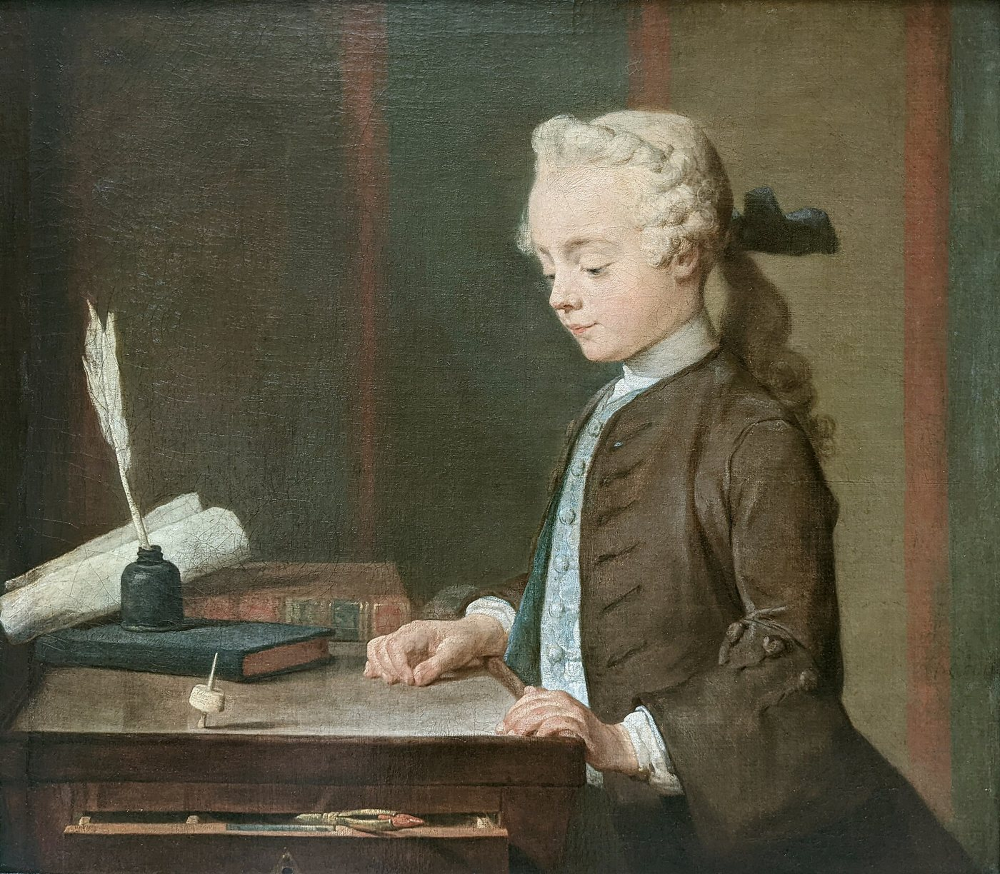
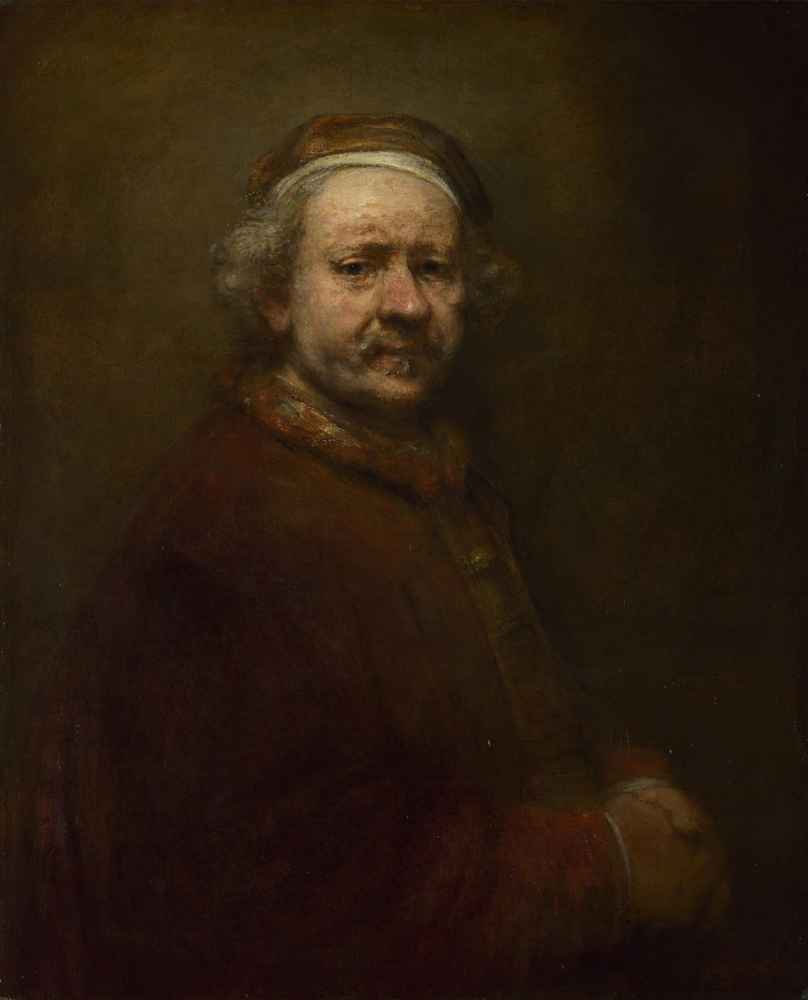
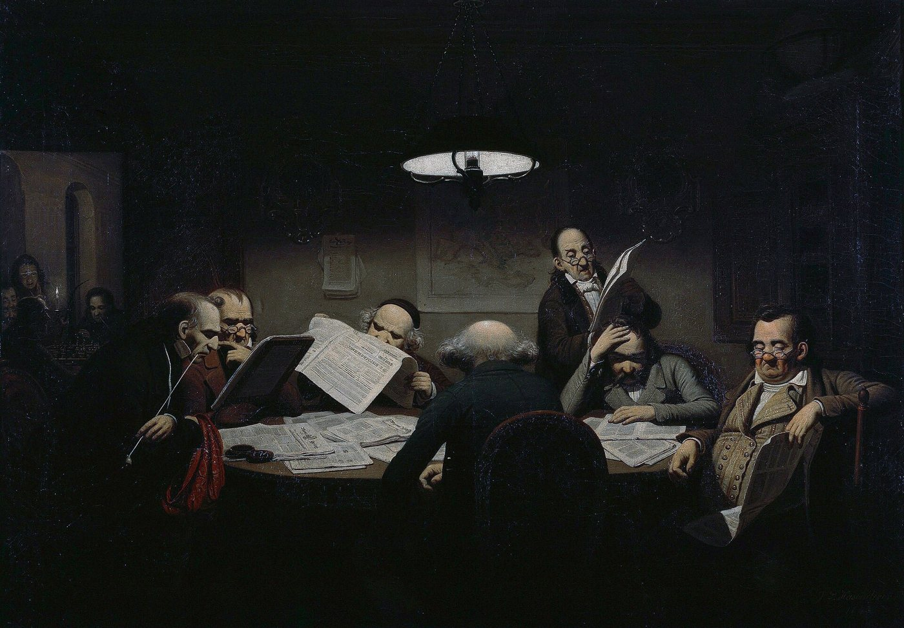
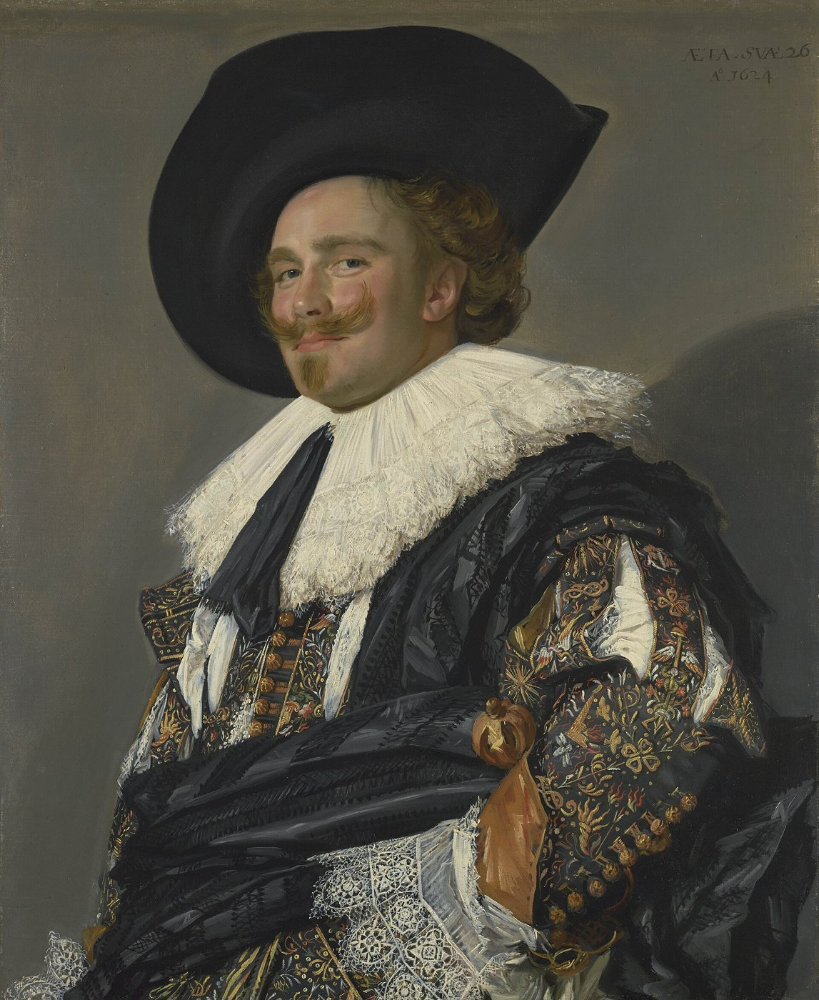
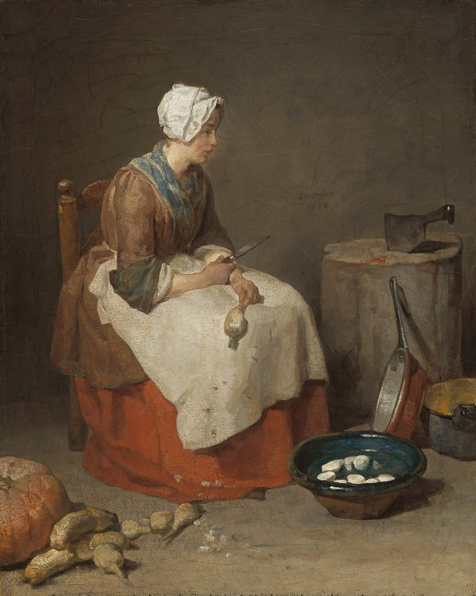

Les progressions de l'année · Seconde professionnelle
Carole Paoli Pompougnac
Une année de français en Seconde
Voici le parcours de l'année pour la Seconde professionnelle. Chaque séquence part d'une vraie question, que les élèves cherchent à résoudre avec les textes.
« Je n'ai jamais eu de chagrin qu'une heure de lecture ne m'ait ôté. »
Montesquieu, Mes pensées, XVIIIe siècle
Ce que l'on trouve dans chaque séquence
Une problématique
Une question ouverte, pas un simple thème.
Un tableau de maître en couverture
Il ouvre la séquence et fait entrer dans le monde de l'auteur.
La spirale de Gorse
Pour lire un texte tour après tour, jusqu'au sens.
Des leçons de 52 minutes
Montre en main, avec un point d'arrêt et une sortie de secours.
La langue chaque jour
Grammaire, lexique, Projet Voltaire, dictées courtes, flashcards.
Des évaluations régulières
Diagnostique, ponctuelles, mi-parcours et sommative.
Comment lire ces pages
Chaque onglet présente ensuite une séquence : sa couverture, sa problématique, les textes, le tableau des leçons et les évaluations.
Les séquences seront ensuite détaillées une par une, leçon par leçon, avec la fiche professeur, la fiche de correction, la version dys et les fiches élèves.
Les onglets se masquent avec la croix. Le bouton « Réafficher les onglets masqués » les fait revenir. En version élève, les encadrés roses et les réponses disparaissent : la page se projette telle quelle au tableau numérique.
Un principe d'apprentissage innovant : la spirale de Gorse
Lire un texte, c'est une escalade, prise après prise, jusqu'au sommet. On commence par ce qui saute aux yeux. À chaque tour, on serre un peu plus le texte, jusqu'à la pointe : le sens.
Les cinq étapes
Tour
Je…
Ce que je fais
Exemple de question
1
Je remarque
Ce qui saute aux yeux : un mot répété, une forme, un titre, une image.
Qu'est-ce qui me frappe tout de suite ?
2
Je repère
Je relève des indices précis dans les lignes du texte.
Où, à quelles lignes, est-ce que je le vois ?
3
Je comprends
Je relie les indices entre eux et je les explique.
Qu'est-ce que ces indices ont en commun ?
4
J'anticipe
Je fais une hypothèse sur ce que le texte cherche à faire.
Où l'auteur veut-il m'emmener ?
5
Je trouve le sens
Je réponds à la problématique, avec mes preuves.
Que me dit ce texte, à moi, aujourd'hui ?
La règle d'or
À chaque tour, l'idée s'écrit à l'extérieur de la spirale. Les lignes du texte s'écrivent à l'intérieur.
Le brouillon du commentaire et de la dissertation suit la même spirale.
La mise en page modèle est celle des Grizzlies : la spirale, puis le tableau des étapes, des grilles à cocher, une version dys, la fiche professeur et le corrigé en tête. Chaque séquence indique le texte sur lequel la spirale est travaillée.
Méthode de la spirale conçue par Madame Carole Paoli Pompougnac
Seconde professionnelle
Seconde professionnelle
La progression de l'année

Jean Siméon Chardin, L'Enfant au toton
Huile sur toile, 1738, Paris, musée du Louvre. Domaine public, via Wikimedia Commons. Voir l'œuvreUn garçon a posé ses livres et sa plume. Il regarde tourner un toton, très attentif : la patience et l'attention de l'année qui commence.
Mise en situation
Lire, s’orienter, commencer
Entrer dans le français de Seconde professionnelle et choisir une première séquence.
Ce que demande le programme (BO spécial n° 5 du 11 avril 2019, programme de français de la classe de seconde préparant au baccalauréat professionnel)
Trois objets d'étude : « Devenir soi : écritures autobiographiques » ; « S'informer, informer : les circuits de l'information » ; « Dire et se faire entendre : la parole, le théâtre, l'éloquence ».
Devenir soi : une œuvre littéraire au choix du professeur et un groupement de textes, d'œuvres artistiques et de documents d'époques variées.
S'informer, informer : un groupement de textes et de documents variés, avec une large place aux images et aux documents sonores.
Dire et se faire entendre : une pièce de théâtre lue en entier, ses mises en scène, et un groupement de poèmes et de discours d'époques variées.
Une perspective d'étude, en co-intervention avec l'enseignement professionnel : « Dire, écrire, lire le métier ».
Les quatre compétences du programme
Maîtriser l'échange oral : écouter, réagir, s'exprimer dans diverses situations de communication.
Maîtriser l'échange écrit : lire, analyser, écrire et adapter son expression écrite selon les situations et les destinataires.
Devenir un lecteur compétent et critique, adapter sa lecture à la diversité des textes.
Confronter des connaissances et des expériences pour se construire.
La maîtrise de la langue, pour la culture commune, la vie professionnelle et la poursuite d'études, se travaille sur toute la formation, dans l'étude de la langue ci-dessous.
Les séquences
Période
Séquence
Objet d'étude
Œuvre
Leçons
Septembre
Évaluation diagnostique de rentrée
Tous
Textes courts
2
Sept. à nov.
1. Devenir soi quand on se sent étranger
Devenir soi
Romain Gary, La Promesse de l'aube
9
Nov. à janv.
2. Peut-on croire ce qu'on voit ?
S'informer, informer
Groupement
8
Févr. à avril
3. Des mots pour se faire respecter
Dire et se faire entendre
Edmond Rostand, Cyrano de Bergerac
10
Toute l'année
4. Se présenter pour être choisi
Dire, écrire, lire le métier
Écrits professionnels
6
Le calendrier de l'année 2026-2027
Rentrée le mardi 1er septembre 2026. Les vacances d'hiver et de printemps changent selon la zone, mais le nombre de semaines de cours de chaque période reste le même en zones A, B et C. Les dates des séquences sont celles du fichier, sans changement.
Seconde professionnelle : 120 heures par an pour le français, l'histoire-géographie et l'EMC, soit 4 heures par semaine à partager. Indique ici ta part de français.
Co-intervention, toute l'année : séquence 4, 6 leçons, sur les 15 heures annuelles de co-intervention français et enseignement professionnel. Bilan : ça rentre, il reste 9 heures.
Période
Séquences
Semaines de cours
Créneaux de 52 min
Leçons prévues
Bilan
Sept. à janv.
Diagnostic (2), séquence 1 (9) et séquence 2 (8)
19
Toussaint, 11 novembre, Noël
Févr. à avril
Séquence 3
10
Vacances d'hiver et de printemps, lundi de Pâques
Mai à juin
Aucune séquence de français prévue dans le fichier
0
Ascension et pont du 7 mai, lundi de Pentecôte
Les créneaux restants servent aux dictées, au Projet Voltaire, aux corrections, aux devoirs et aux imprévus. Aucune leçon n'a été ajoutée.
La langue sur l'année
Séquence
Point du programme
Projet Voltaire
1
La maîtrise du verbe : les temps du récit, indicatif et subjonctif
Terminaisons en -é, -er, -ez
2
La compréhension des textes : voix active et voix passive
Accord du participe passé avec être
3
L'enrichissement du lexique : formation des mots, polysémie
Homophones a, à, et, est
4
L'orthographe lexicale et grammaticale dans les écrits professionnels
Majuscules, formules de politesse
Seconde professionnelle · Séquence 1 · Devenir soi : écritures autobiographiques
À caler : Sept. à nov. · 9 leçons
Séquence déjà en préparation
Devenir soi quand on se sent étranger

Rembrandt van Rijn, Autoportrait à l'âge de 63 ans
Huile sur toile, 1669, Londres, National Gallery. Domaine public, via Wikimedia Commons. Voir l'œuvreRembrandt s'est peint toute sa vie. Ici, l'année de sa mort, il se regarde en face, sans rien cacher : il est devenu lui-même.
Problématique
Comment devient-on soi quand on se sent étranger ?
L'œuvre et les textes
Œuvre intégrale : Romain Gary, La Promesse de l'aube, Gallimard, 1960 (références seulement, le texte est protégé)
Michel de Montaigne, Essais, « Au lecteur », 1580
Jean-Jacques Rousseau, Les Confessions, livre II, le ruban volé, 1782
Citation de Michel Agier, France Culture, en ouverture
Autoportraits de peintres et selfies : la représentation de soi, la protection de ses données
La spirale de Gorse : sur l'épisode du ruban volé. Premier tour : le mensonge et la honte, qui sautent aux yeux.
Les leçons
Chaque leçon dure 52 minutes, montre en main, avec un point d'arrêt et une sortie de secours.
N°
Leçon
Activité dominante
1
Se regarder en face : l'autoportrait de Rembrandt
Oral
2
Une phrase de Michel Agier : qu'est-ce qu'être étranger ?
Débat réglé
3
Montaigne : « Je suis moi-même la matière de mon livre »
Lecture
4
Rousseau et le ruban volé : avouer sa faute
Spirale de Gorse
5
Évaluation de mi-parcours
Questions de lecture
6
Gary : une mère, une promesse
Lecture de l'œuvre
7
Mon image en ligne : selfie, profil, données
Oral, éducation aux médias
8
Atelier d'écriture : un moment où j'ai changé
Écriture et réécriture
9
Évaluation sommative
Lecture et écriture
Les évaluations
Diagnostique
Se présenter en dix lignes, sans dire son nom.
Ponctuelles
Dictées flash -é, -er, -ez ; quiz de lecture de l'œuvre ; présentation orale d'un autoportrait.
Mi-parcours
Expliquer pourquoi Rousseau raconte une faute dont il a honte.
Sommative
Questions sur un extrait inconnu, puis récit autobiographique : un moment où j'ai changé.
Seconde professionnelle · Séquence 2 · S'informer, informer : les circuits de l'information
À caler : Nov. à janv. · 8 leçons
Peut-on croire ce qu'on voit ?

Johann Peter Hasenclever, Le Cabinet de lecture
Huile sur toile, 1843, Berlin, Alte Nationalgalerie. Domaine public, via Wikimedia Commons. Voir l'œuvreLe soir, sous la lampe, des hommes lisent les journaux. L'un s'emporte, l'autre approuve, un troisième s'endort : l'information circule, et chacun la reçoit à sa façon.
Problématique
Comment vérifier une information avant de la croire et de la partager ?
Le groupement
Une même information traitée par trois médias : presse écrite, radio, réseau social
Des photographies retouchées au XXe siècle et aujourd'hui : faits datés et sourcés
Un reportage radio court, avec sa transcription
Des ressources du CLEMI sur la vérification des sources
Un tableau : Hasenclever, Le Cabinet de lecture, pour la circulation de l'information
La spirale de Gorse : sur une une de journal. Premier tour : le titre et la photo, qui sautent aux yeux.
Les leçons
Chaque leçon dure 52 minutes, montre en main, avec un point d'arrêt et une sortie de secours.
N°
Leçon
Activité dominante
1
Le cabinet de lecture de Hasenclever : qui informe qui ?
Oral
2
Une une de journal en spirale
Spirale de Gorse
3
Une information, trois médias
Comparaison
4
Évaluation de mi-parcours
Analyse de document
5
Images retouchées : hier et aujourd'hui
Lecture d'images
6
Écouter pour s'informer : un reportage radio
Compréhension orale
7
Atelier : écrire une brève vérifiée
Écriture, voix passive
8
Évaluation sommative
Écrit et oral
Les évaluations
Diagnostique
Dire d'où viennent les informations que l'on lit chaque jour.
Ponctuelles
Quiz « vrai ou faux » sur des titres ; dictée flash sur le participe passé ; revue de presse d'une minute.
Mi-parcours
Identifier la source, la date et l'intention d'un document.
Sommative
Vérifier une information douteuse en trois étapes, puis rédiger une brève vérifiée et la présenter à l'oral.
Seconde professionnelle · Séquence 3 · Dire et se faire entendre : la parole, le théâtre, l'éloquence
À caler : Févr. à avril · 10 leçons
Des mots pour se faire respecter

Frans Hals, Le Cavalier riant
Huile sur toile, 1624, Londres, Wallace Collection. Domaine public, via Wikimedia Commons. Voir l'œuvreMoustache, panache, regard qui défie : l'allure d'un cadet de Gascogne, comme Cyrano.
Problématique
Les mots peuvent-ils nous rendre plus forts ?
L'œuvre et les textes
Œuvre intégrale : Edmond Rostand, Cyrano de Bergerac, 1897
Scènes étudiées : la tirade du nez (acte I, scène 4) ; la tirade des « Non, merci » (acte II, scène 8) ; la scène du balcon (acte III, scène 7)
Groupement de discours : Victor Hugo, discours sur la misère, 1849 ; Malala Yousafzai, discours à l'ONU, 12 juillet 2013
Un poème à dire : Victor Hugo, « Demain, dès l'aube… », 1856
La spirale de Gorse : sur la tirade du nez. Premier tour : la liste des tons, « Agressif », « Amical », « Descriptif »…
Les leçons
Chaque leçon dure 52 minutes, montre en main, avec un point d'arrêt et une sortie de secours.
N°
Leçon
Activité dominante
1
Le Cavalier riant : avoir du panache
Oral
2
La tirade du nez : répondre à une insulte
Spirale de Gorse
3
Dire une tirade : voix, souffle, regard
Lecture à voix haute
4
« Non, merci » : refuser avec élégance
Lecture analytique
5
Évaluation de mi-parcours
Lecture expressive notée
6
Le balcon : parler à la place d'un autre
Jeu et mises en scène comparées
7
Hugo et Malala : convaincre une assemblée
Lecture de discours
8
« Demain, dès l'aube… » : dire un poème
Récitation
9
Atelier : écrire et préparer mon discours
Écriture, projet du bac pro
10
Évaluation sommative
Prise de parole
Les évaluations
Diagnostique
Parler une minute devant la classe d'un objet que l'on aime.
Ponctuelles
Dictées flash a, à, et, est ; flashcards des figures de style ; répliques dites par cœur.
Mi-parcours
Lire à voix haute dix vers de la tirade du nez, avec une grille.
Sommative
Prononcer un discours de trois minutes sur une cause qui compte pour soi, puis répondre à deux questions.
Seconde professionnelle · Séquence 4 · Perspective d'étude : Dire, écrire, lire le métier
À caler : Toute l'année · 6 leçons
Se présenter pour être choisi

Jean Siméon Chardin, La Ratisseuse
Huile sur toile, 1738, Washington, National Gallery of Art. Domaine public, via Wikimedia Commons. Voir l'œuvreUne jeune femme s'arrête un instant de peler ses navets, le couteau encore à la main : un geste de travail, précis et calme, peint comme un chef-d'œuvre. La dignité du métier.
Problématique
Comment trouver les mots justes pour parler de soi et de son métier ?
Les documents
Des offres de PFMP réelles, du secteur des élèves
Des CV et des lettres de motivation à corriger
Un entretien d'embauche filmé, entre un recruteur et un candidat
Un extrait littéraire sur le travail : Émile Zola, Au Bonheur des Dames, 1883, l'arrivée de Denise au magasin
La spirale de Gorse : sur une offre de PFMP. Premier tour : les mots en gras et les exigences.
Les leçons
Chaque leçon dure 52 minutes, montre en main, avec un point d'arrêt et une sortie de secours.
N°
Leçon
Activité dominante
1
La Ratisseuse : peindre un geste de travail
Oral
2
Lire une offre de PFMP
Spirale de Gorse
3
Denise au Bonheur des Dames : le premier jour
Lecture
4
Écrire mon CV et mon courriel de candidature
Écriture et réécriture
5
Simuler un entretien
Jeu de rôle
6
Évaluation sommative
Dossier et oral
Les évaluations
Diagnostique
Lister cinq qualités utiles dans son futur métier, avec un exemple pour chacune.
Ponctuelles
Quiz des formules de politesse ; correction d'un courriel fautif ; présentation de soi en trente secondes.
Mi-parcours
Repérer les attentes d'une offre et y répondre point par point.
Sommative
Remettre un CV et un courriel de candidature, puis passer un entretien de cinq minutes.
Télécharger la fiche en gros caractères
Toute la progression de la Seconde professionnelle, en gros caractères, avec les tableaux.